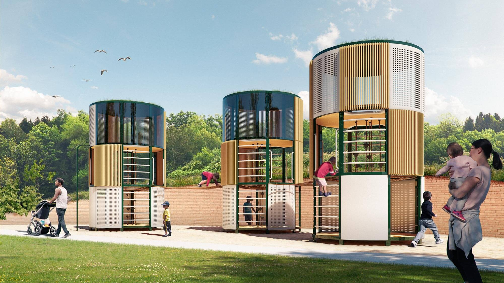
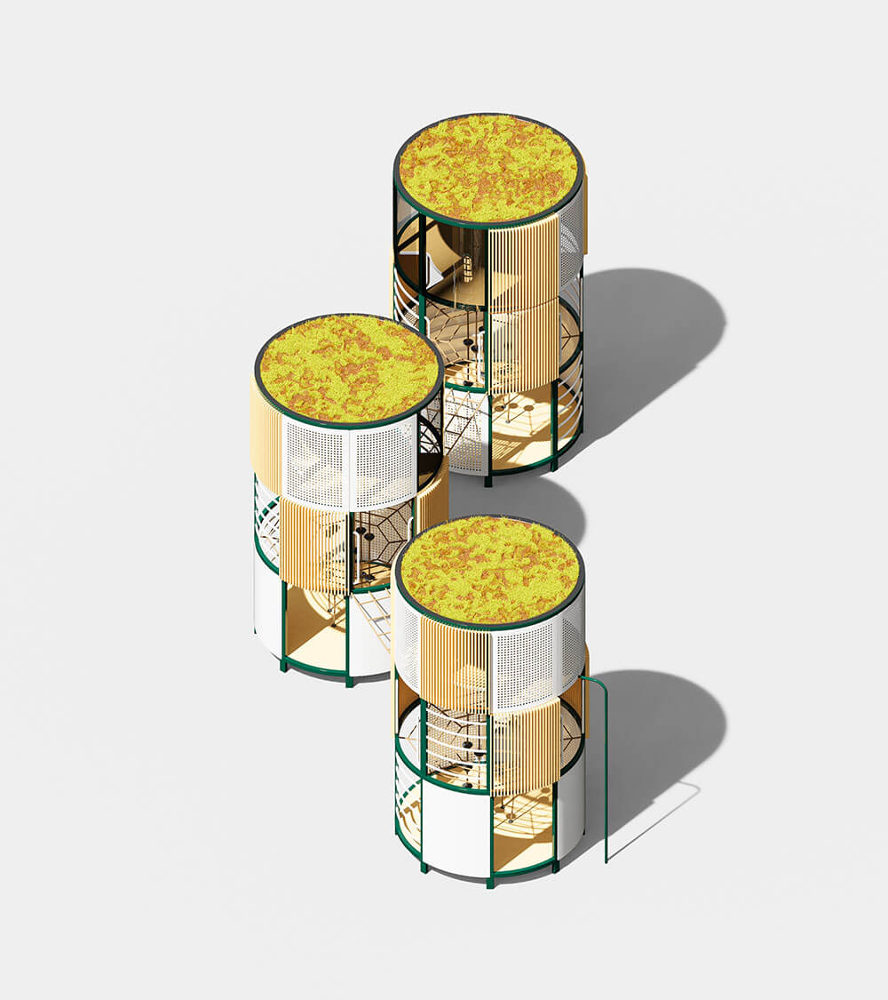
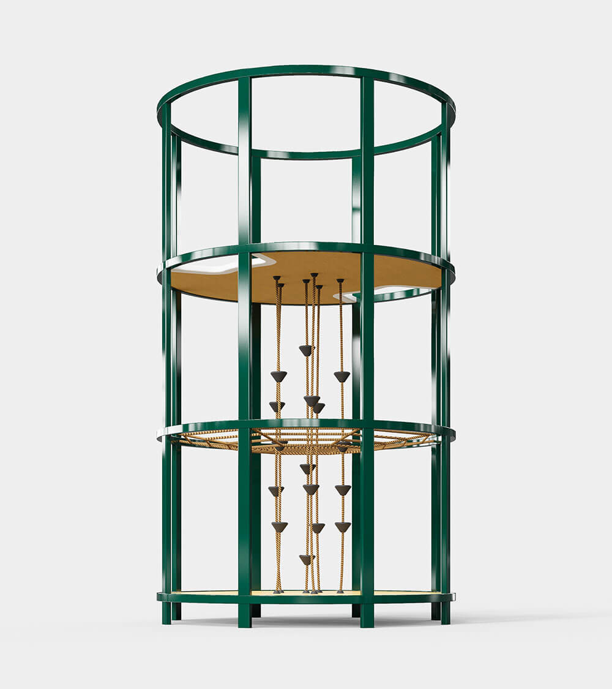
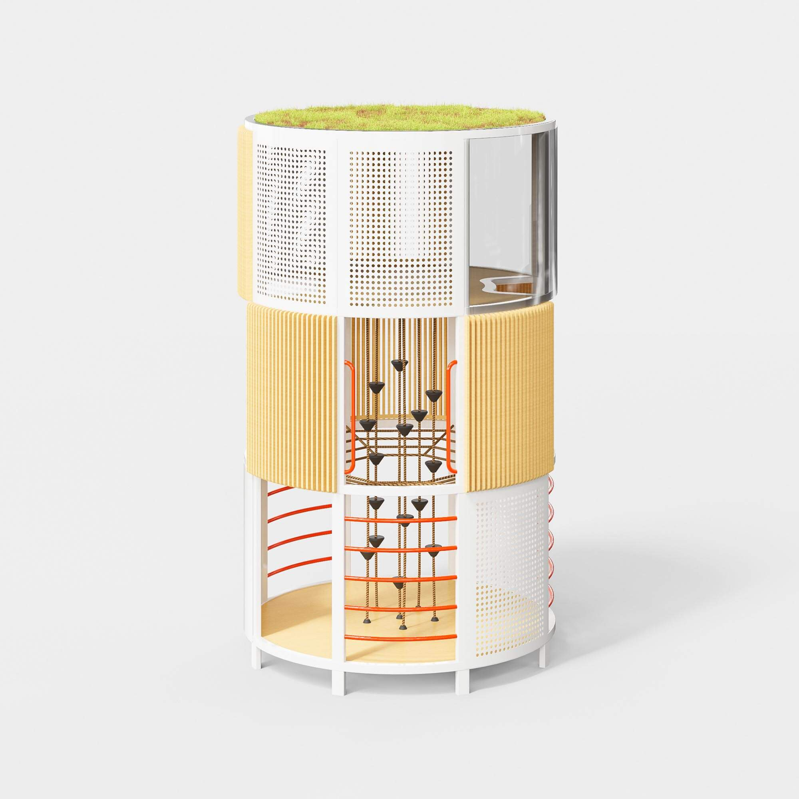
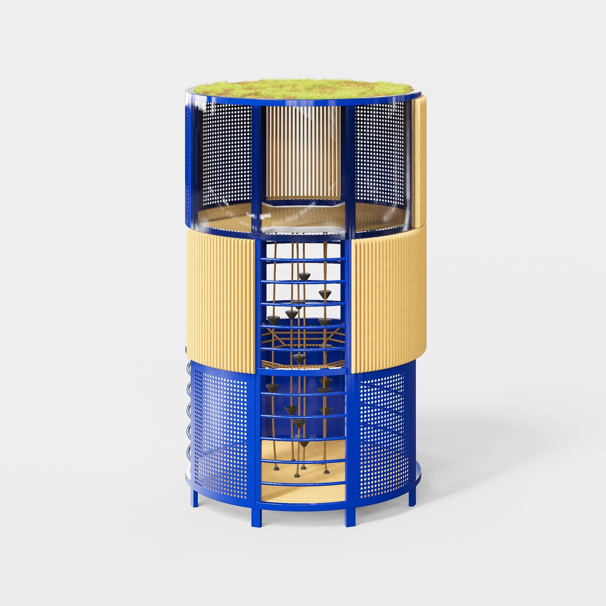
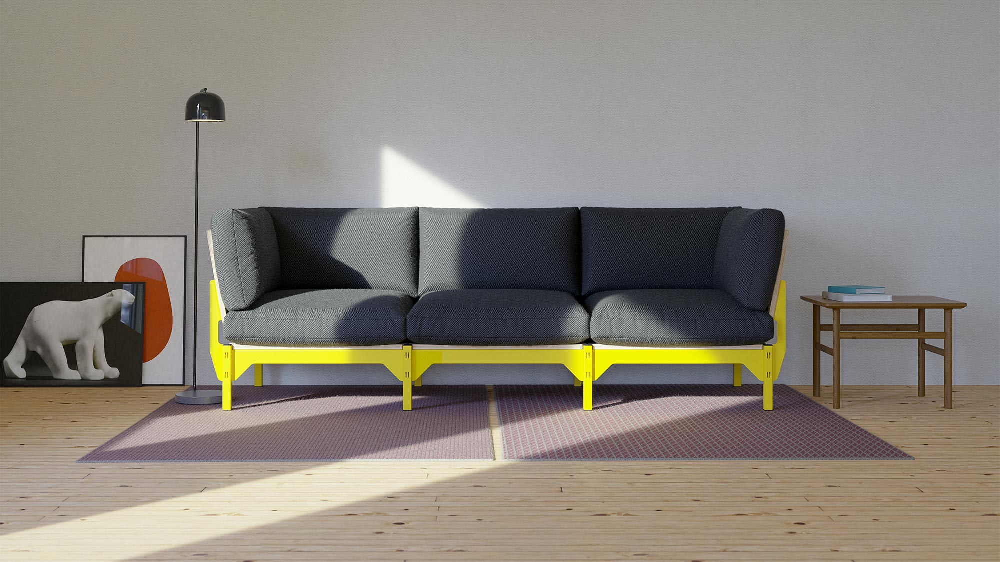

<div class="slides col-4">
  <ul class="rslides">
    <li></li>
    <li></li>
    <li></li>
    <li></li>
    <li></li>
    <li></li>
    <li></li>
  </ul>
</div>

<hr>




<hr>


<script>
  $(".rslides").responsiveSlides({
    auto: true,             // Boolean: Animate automatically, true or false
    speed: 1000,            // Integer: Speed of the transition, in milliseconds
    timeout: 4000,          // Integer: Time between slide transitions, in milliseconds
    pager: false,           // Boolean: Show pager, true or false
    nav: true,             // Boolean: Show navigation, true or false
    random: true,          // Boolean: Randomize the order of the slides, true or false
    pause: true,           // Boolean: Pause on hover, true or false
    pauseControls: true,    // Boolean: Pause when hovering controls, true or false
    prevText: "",   // String: Text for the "previous" button
    nextText: "",       // String: Text for the "next" button
    maxwidth: "",           // Integer: Max-width of the slideshow, in pixels
    navContainer: "",       // Selector: Where controls should be appended to, default is after the 'ul'
    manualControls: "",     // Selector: Declare custom pager navigation
    namespace: "rslides",   // String: Change the default namespace used
    before: function(){},   // Function: Before callback
    after: function(){}     // Function: After callback
  });
</script>
<style>
  a.ideas {
    border-bottom: 1px solid rgba(0,0,0,.85);
  }
</style>
